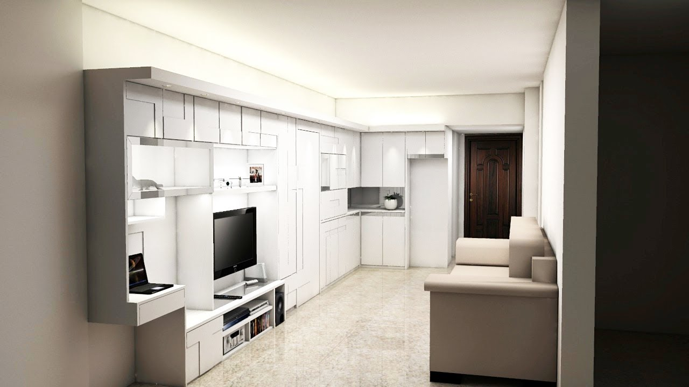

87
About me

Past Articles
- Home - Nazza Interior Design
Uși de interior NEW FOREST , Parchet laminat diferite grosimi , preturi corecte - MONTAJ USI INTERIOR si EXTERIOR !!! Preturi de criza ! Brasov,Str. SCOLII ( COLT CU STRADA DE MIJLOC ) , Romania - Usi de interior | BestImp.ro | BestImp.ro
Va oferim solutia pentru usi de interior care va pot schimba aspectul casei dumneavoastra. - Design Interior | Adela Pârvu - Interior design blogger
Producator usi Porta. Oferta Porta Doors mai cuprinde usa intrare, usi lemn, usi antifurt, usi din metal, usi cu sticla si usi de exterior. - Idei case – Proiecte de case mici, cu mansarda si etaj
Design Interior Categorie. Case, Design Interior. 16 aprilie 2020 . Interior rustic cu atmosferă calmă ... - Usi interior - Leroy Merlin
Academia.edu is a platform for academics to share research papers. - Beainteriors
Media in category "Corvin Castle, interior" The following 99 files are in this category, out of 99 total. Alstyle - Castelul Corvinilor (10).JPG 2,592 × 1,944; 1.75 MB - Usa intrare, usi lemn, producator usi - Porta Doors
Pardoseala teraselor este tratată tot cu microciment, ca atare, de la interior pare că totul se prelungește către grădină, finisajul de la nivel inferior fiind practic același.De asemenea, țesăturile decorative, dar și stilul pieselor de mobilier sunt similare celor de la interior, tocmai pentru ca întreaga amenajare să fie armonioasă. - Home - Georgiana Ursache Interiors
- For Non Flash Site Please Click Here - R I C H A R D H A L L B E R G I N T E R I O R D E S I G N ( 3 1 0 ) 6 5 9 3 5 3 1 © 2 0 1 0 R I C H A R D H A L L B E R G I ... - Deko Interior
Un proces de constructie sau de renovare completa a locuintei are nevoie de un plan bine stabilit si de cele mai potrivite produse pentru ca rezultatul final sa fie de succes. Daca ai selectat deja parchetul, piesele de mobilier si de decor, nu uita importanta usilor pentru echilibrarea imaginii finale. In cadrul acestui magazin online iti punem la dispozitie o gama variata de usi de interior ... - LUMINA EULUI INTERIOR
Lumina dimineții avea greutatea și culoarea mierii. Mă odihneam, fără nici un cuvânt, într-un peisaj interior complet gol. Eram nimeni. Istoria mea personală, aceea în care devenisem un jurnalist implicat complet în trasformările lumii exterioare, se dizolvase. Poveștile pe care mi le spusesem despre mine însumi se vedeau acum ...
Menu
- Home - Nazza Interior Design
- Usi de interior | BestImp.ro | BestImp.ro
- Design Interior | Adela Pârvu - Interior design blogger
- Idei case – Proiecte de case mici, cu mansarda si etaj
- Usi interior - Leroy Merlin
- Beainteriors
- Usa intrare, usi lemn, producator usi - Porta Doors
- Home - Georgiana Ursache Interiors
- Deko Interior
- LUMINA EULUI INTERIOR
Deko Interior

contul meu Intra in cont 0 cosul meu 0,00 lei Lista de dorinte Compara Contact 0724.341-946 Fototapet Vlies Autoadeziv Pentru usa Tablouri Canvas Acrilic Din pluta Pictura Pe numere Manuala Harti razuibile Paravane Accesorii Acasa
Recent adaugate
Cele mai vanduteCel mai bine vandut articol
Add to Compare Add to Wishlist 12,00 lei Adeziv pentru tapet Add to Compare Add to Wishlist 6,00 lei Carlig Add to Compare Add to Wishlist 108,00 lei Fototapet vlies - World Map for Kids Nou Add to Compare Add to Wishlist 231,23 lei Pictura pe numere - Baby tiger Nou Add to Compare Add to Wishlist 324,00 lei Tablou canvas - Forest waterfall 1 Add to Compare Add to Wishlist 84,00 lei Set de accesorii pentru fototapet Add to Compare Add to Wishlist 108,00 lei Fototapet vlies - Sea puzzle Add to Compare Add to Wishlist 108,00 lei Fototapet vlies - Illuminated textureMarci
Inscriere la newsletter
Te putem ajuta? Suna-ne 0724-341.946!
Te putem ajuta? Suna-ne 0724-341.946! 0724-341.946 Deko InteriorBucuresti
Romania
Bucuresti sales@dekointerior.ro Follow Us Facebook Instagram
Produse
Produse Reduceri de pret Produse noi Cele mai cumparateFirma noastra
Firma noastra Livrarea comenzilor Procedura de retur Conditii de utilizare Despre noi GDPR Politica cookies Contacteaza-ne Harta site-ului
© 2020 - Deko Interior Concept SRL, CUI: 42298876, Reg. Com. J40/2510/2020
Posted by Jack  Read more
Read more  Comments (15)
Comments (15)  2020.09.21 09:01
2020.09.21 09:01